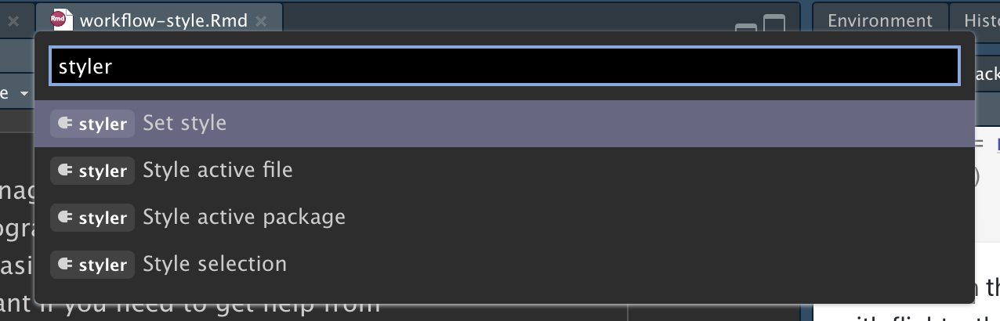

Workflow & Reproducibility
CS&SS 508 • Lecture 3
9 April 2024
Victoria Sass
Roadmap
Last time, we learned:
- The
tidyverse - Basics of
ggplot2 - Advanced features of
ggplot2 - Extensions of
ggplot2
Today, we will cover:
- Code Style
- Workflow
- Reproducibility
- Useful Base
R
Code Style
Disclaimer
There are honestly no hard, fast rules about what is the correct code. You can produce all styles of code that will run and get you your desired results.
However, the following recommendations are made with these truths in mind:
- Using a consistent style cuts down on the decisions you have to make, therefore allowing you to focus your attention on the substance of your code
- This makes code easier to write and your overall process more efficient!
- Easy-to-read code is faster-read-code: both for any collaborators you may have and also future-you.
- This is particularly helpful when scanning code in order to troubleshoot an error
You can read more about the specific style we’re using in this class here.
Naming Objects
It’s good practice to name objects (and oftentimes variables) using only lowercase letters, numbers, and _ (to separate words).
Remember to give them descriptive names, even if that means they’re longer.
If you have many related variables, try and be consistent with your naming convention.
- A common prefix is preferable to a common suffix due to RStudio’s autocomplete feature.
Spacing
For readability you’ll want to put spaces around all mathematical operators1 (i.e. +, -, ==, <, etc.) as well as the assignment operator (<-).
Pipes
As you begin to use more functions, sequentially, it can start to get unclear what’s happening when, and to what.
With nested functions, like those above, you need to read the order of operations inside out, which is a bit awkward. It becomes even more confusing the more function calls you have, especially when they have multiple arguments each.
Enter the pipe1: |>
Pipes read “left to right” which is much more intuitive!
Pipes
As you can see, pipes allow us to “chain” many function calls together easily.
The so-called “native pipe” (i.e. built into base R) is relatively new. Before this, the pipe was a function from the magrittr package that looks like this: %>%.
This latter version continues to work but has a different functionality than the new, native pipe.
Most importantly, while both the magrittr pipe and the native pipe take the LHS (left-hand side) and “pipe” it to the RHS (right-hand side), they operate differently when it comes to explicitly specifying which argument of the RHS to pipe the LHS into.
a <- c("Z", NA, "C", "G", "A")
# magrittr pipe
a %>% gsub('A', '-', x = .)
# native pipe
a |> gsub('A','-', x = _) # _ is the placeholder for |>
a |> gsub(pattern = 'A', replacement = '-') # leaving the "piped" argument as the only unnamed argument also works
a |> (\(placeholder) gsub('A', '-', x = placeholder))() # using an anonymous function call allows you to be explicit while specifying your own placeholderPipes
Some good syntax practices:
- You should always put a space before
|>and it should usually be the last thing on a line.
- New functions should be on a new line, indented 2 spaces (RStudio will automatically do this for you if you hit return after a pipe)
- Named arguments within a function should also get their own line
Selecting the native pipe
The |> is recommended over %>% simply because it’s much simpler to use and it’s always available (%>% relied on the magrittr package which was a dependency of tidyverse packages).
You’ll need to specify to R that you want to enable its usage by going to Tools > Global Options > Code. Within the “Editing” Tab there is an option to “Use native pipe operator, |>”. Check it!

Keyboard Shortcut
To insert a pipe (with spaces) quickly: Ctrl+Shift+M (Windows & Linux OS) Shift+Command+M (Mac)
Other Formatting Options
There are some other useful formatting options I’d suggest setting globally and others you can specify to your preferences.
Suggested:
- Highlight Function Calls
- Enable preview of colors
- Rainbow parentheses
Other Formatting Options
There are some other useful formatting options I’d suggest setting globally and others you can specify to your preferences.
Suggested:
- Highlight Function Calls
- Enable preview of colors
- Rainbow parentheses

Other Formatting Options
There are some other useful formatting options I’d suggest setting globally and others you can specify to your preferences.
Suggested:
- Highlight Function Calls
- Enable preview of colors
- Rainbow parentheses

Other Formatting Options
There are some other useful formatting options I’d suggest setting globally and others you can specify to your preferences.
Suggested:
- Highlight Function Calls
- Enable preview of colors
- Rainbow parentheses
Other Formatting Options
There are some other useful formatting options I’d suggest setting globally and others you can specify to your preferences.
Up to you:
- Code highlight style

Other Formatting Options
There are some other useful formatting options I’d suggest setting globally and others you can specify to your preferences.
Up to you:
- Pane layout

Other Formatting Options
There are some other useful formatting options I’d suggest setting globally and others you can specify to your preferences.
Up to you:
- Markdown options
- Output preview
- Inline output

Styling existing code
Imagine you’ve inherited a bunch of code from someone else and NOTHING is styled in the tidyverse way you’ve become accustomed. Or, you’ve dabbled in R before and you have some old code that is all over the place, with respect to styling.
Thanks to Lorenz Walthert there’s a package for that! Using the styler package you can automatically apply the tidyverse style guide standards to various filetypes (.R, .qmd, .Rmd, etc.) or even entire projects.
Have a style or variation of the tidyverse style that you prefer? You can specify that in the package as well. Use the keyboard shortcut Cmd/Ctl + Shift + P and search for “styler” to see all the options available.

Workflow
.R scripts
We’ve been working with Quarto documents but you’ll sometimes simply want to use an R script, which is basically an entire file that is just a code chunk.
- You just need to run code, without the need for accompanying text output and plots in the same document. Examples include:
- Reading in and cleaning/manipulating your data before analysis
- Writing functions you’ll use throughout your project
- Getting descriptive statistics/making descriptive plots of data
- Running models and generating tables/plots of their results
- Homework assignments (like for this class) that require you to show code, describe your process for arriving at your solution, and include any results (i.e. tables, statistics, visualizations)
- Academic articles
- Presentations for class, conferences, talks, etc.
- Theses/dissertations
- Interactive visualizations (i.e. widgets)
- Building your own website
File naming
File names should:
- be machine readable: avoid spaces, symbols, and special characters. Don’t rely on case sensitivity to distinguish files.
- be human readable: use file names to describe what’s in the file.
- play well with default ordering: start file names with numbers so that alphabetical sorting puts them in the order they get used.
Organization and Portability
Organizing research projects is something you either do accidentally — and badly — or purposefully with some upfront labor.
Uniform organization makes switching between or revisiting projects easier.
project/
readme.md
data/
derived/
data_processed.RData
raw/
data_core.csv
data_supplementary.csv
docs/
paper_asa.qmd
paper_journal.qmd
syntax/
01-functions.R
02-cleaning.R
03_merging.R
04-exploratory.R
05-models.R
06-visualizations.R
visuals/
descriptive.png
heatmap.png
predicted_probabilities.png- There is a clear hierarchy
- Written content is in
docs - Code is in
syntax - Data is in
data - Visualizations are in
visuals - The
readme.mddescribes the project
- Written content is in
- Naming is uniform
- All lower case
- Words separated by underscores
- Names are self-descriptive
- Numbering scripts makes it clear in which order they should be run.
alternative model.R
code for exploratory analysis.r
finalreport.qmd
FinalReport.qmd
fig 1.png
Figure_02.png
model_first_try.R
run-first.r
temp.txt- Ordering of the files is unclear
- Inconsistent naming is confusing (which final report is THE final report?)
- Non-descriptive naming means more work for you in trying to decipher its contents
Working directory
Your working directory is where R will look for any files that you ask it to load and where it’ll put anything you ask it to save. It is literally just a folder somewhere on your computer or the remote server/cloud you’re working within.
You can ask R what your current working directory is by running getwd() (get working directory).
[1] "/Users/victoriasass/Desktop/GitHub/CSSS508/Lectures/Lecture3"You can see above that this lecture was created in a lecture-specific folder within a lectures folder, in a directory for this class, which is in a folder called GitHub on the Desktop of my laptop.
While you can technically set your working directory using setwd() (set working directory) and giving R a filepath, in the name of reproducible research DO NOT DO THIS! I strongly advise an alternative: RStudio Projects.
Projects
A “project” is RStudio’s built-in organizational support system which keeps all the files associated with a given project (i.e. data, R scripts, figures, results) together in one directory.
Creating a new project quite basically creates a new folder in a place that you specify. But it also does a few of other extremely useful things:
- Creates a
.Rprojfile which tracks your command history and all the files in your project folder. - Contains all the files needed to reproduce your work
- i.e. you can send a project folder to someone and they will be able to run it on their local machine
- Facilitates version control with built-in git/GitHub connection (more on this later in the course)
Creating an RStudio Project

You can create a project by clicking
- File > New Project…
-
 in the upper-left corner of RStudio
in the upper-left corner of RStudio - the dropdown menu in the upper-right corner of RStudio and selecting New Project…
Workflow versus Product
To summarize Jenny Bryan, one should separate workflow (i.e. your personal tastes and habits) from product (i.e. the logic and output that is the essence of your project).
Workflow
The software you use to write your code (e.g. R/RStudio)
The location you store a project
The specific computer you use
The code you ran earlier or typed into your console
Product
The raw data
The code that operates on your raw data
The packages you use
The output files or documents
Each data analysis (or course using R) should be organized as a project.
- Projects should NOT modify anything outside of the project nor need to be modified by someone else (or future you) to run.
- Projects should be independent of your workflow.
Portability
For research to be reproducible, it must also be portable. Portable software operates independently of workflow.
- Use
setwd(). - Use absolute paths except for fixed, immovable sources (secure data).
read_csv("C:/my_project/data/my_data.csv")
- Use
install.packages()inRscript or .qmd files. - Use
rm(list=ls())anywhere but your console.
- Use RStudio projects (or the
herepackage) to set directories. - Use relative paths to load and save files:
read_csv("./data/my_data.csv")
- Load all required packages using
library(). - Clear your workspace when closing RStudio.
- Set Tools > Global Options… > Save workspace… to Never

PSA: setwd() and rm(list=ls())
rm(list=ls())
Make sure not to expect rm(list=ls()) to give you a fresh R session. It may feel that way when all the objects in your global environment disappear but there are a host of dependencies (i.e. loaded packages, options set to non-defaults, the working directory) that have not changed. Your script will still be vulnerable to those settings unless you start a fresh R session.
File paths
A file path specifies the location of a file in a computer’s file system structure. They can be used to locate files and web resources. Some important things to note:
- For file systems, each level in the hierarchy is a directory
- For URLs, each level in the hierarchy is a page.
- A path is a string of characters which specifies a unique location in a directory or page hierarchy.
- Different sections of the path are separated by a path separator, such as a forward slash (
/).- These different sections represent the separate directories or pages in the hierarchy.
- In Unix-based operating systems, such as Linux or macOS, the path separator is a forward slash (
/).- In Windows, the path separator is a back slash (
\). - URLs follow a standard format that always uses a forward slash (
/) as the path separator regardless of the operating system.
- In Windows, the path separator is a back slash (
Absolute Versus Relative Paths
Specifies the location of a file from the root directory in the file system structure. They are also called “full file paths” or “full paths.”
Specifies the location of a file in the same folder or on the same server. In other words, a relative file path specifies a location of a file that is relative to the current directory.
Relative file paths use a dot notation at the start of the path, followed by a path separator and the location of the file.
- A single dot (
.) indicates the current directory (as shown above) - A double dot (
..) indicates the parent directory.
Divide and Conquer
Often you do not want to include all code for a project in one .qmd file:
- The code takes too long to knit.
- The file is so long it is difficult to read.
There are two ways to deal with this:
-
Use separate
.Rscripts or.qmdfiles which save results from complicated parts of a project, then load these results in the main.qmdfile.- This is good for loading and cleaning large data.
- Also for running slow models.
-
Use
source()to run external.Rscripts when the.qmdrenders- This can be used to run large files that aren’t impractically slow.
- Also good for loading project-specific functions.
The Way of Many Files
I find it beneficial to break projects into many files:
- Scripts with specialized functions.
- Scripts to load and clean each set of variables.
- Scripts to run each set of models and make tables and plots.
- A main .qmd that runs some or all of these to reproduce the entire project.
Splitting up a project carries benefits:
- Once a portion of the project is done and in its own file, it is out of your way.
- If you need to make changes, you don’t need to search through huge files.
- Entire sections of the project can be added or removed quickly (e.g. converted to an appendix of an article)
- It is the only way to build a proper pipeline for a project.
Pipelines
Professional researchers and teams design projects as a pipeline.
A pipeline is a series of consecutive processing elements (scripts and functions in R).
Each stage of a pipeline…
- Has clearly defined inputs and outputs
- Does not modify its inputs.
- Produces the exact same output every time it is re-run.
This means…
- When you modify one stage, you only need to rerun subsequent stages.
- Different people can work on each stage.
- Problems are isolated within stages.
- You can depict your project as a directed graph of dependencies.
Example Pipeline
Every stage (oval) has an unambiguous input and output. Everything that precedes a given stage is a dependency — something required to run it.

Lab 3
If you haven’t already, go to Tools > Global Options and adjust your settings (i.e. General, Code > Editing, and Code > Display) to those recommended in the lecture and any others that you’d like to change (i.e. Appearance, Pane Layout, or R Markdown)
Restyle the following pipelines following the guidelines discussed in lecture:
flights|>filter(dest=="IAH")|>group_by(year,month,day)|>summarize(n=n(),
delay=mean(arr_delay,na.rm=TRUE))|>filter(n>10)
flights|>filter(carrier=="UA",dest%in%c("IAH","HOU"),sched_dep_time>
0900,sched_arr_time<2000)|>group_by(flight)|>summarize(delay=mean(
arr_delay,na.rm=TRUE),cancelled=sum(is.na(arr_delay)),n=n())|>filter(n>10)Press Option + Shift + K / Alt + Shift + K. What happens? How can you get to the same place using the menus?
Tweak each of the following R commands so that they run correctly:
- What might be a good way to organize your homework assignments for this class?
Break!
Reproducible Research
Why Reproducibility?
Reproducibility is not replication.
- Replication is running a new study to show if and how results of a prior study hold.
- Reproducibility is about rerunning the same study and getting the same results.
Reproducible studies can still be wrong… and in fact reproducibility makes proving a study wrong much easier.
Reproducibility means:
- Transparent research practices.
- Minimal barriers to verifying your results.
Any study that isn’t reproducible can only be trusted on faith.
Reproducibility Definitions
Reproducibility comes in three forms (Stodden 2014):
- Empirical: Repeatability in data collection.
- Statistical: Verification with alternate methods of inference.
- Computational: Reproducibility in cleaning, organizing, and presenting data and results.
R is particularly well suited to enabling computational reproducibility1.
They will not fix flawed research design, nor offer a remedy for improper application of statistical methods.
Those are the difficult, non-automatable things you want skills in.
Computational Reproducibility
Elements of computational reproducibility:
- Shared data
- Researchers need your original data to verify and replicate your work.
- Shared code
- Your code must be shared to make decisions transparent.
- Documentation
- The operation of code should be either self-documenting or have written descriptions to make its use clear.
- Version Control1
- Documents the research process.
- Prevents losing work and facilitates sharing.
Levels of Reproducibility
For academic papers, degrees of reproducibility vary:
- “Read the article”
- Shared data with documentation
- Shared data and all code
- Interactive document
- Research compendium
- Docker compendium: Self-contained ecosystem
Interactive Documents
Interactive documents — like Quarto docs — combine code and text together into a self-contained document.
- Load and process data
- Run models
- Generate tables and plots in-line with text
- In-text values automatically filled in
Interactive documents allow a reader to examine your computational methods within the document itself; in effect, they are self-documenting.
By re-running the code, they reproduce your results on demand.
Common Platforms:
- R: Quarto
- Python: Jupyter Notebooks
Useful Base R
Selecting from vectors with [
Given a vector of values:
You can select from the vector
Selecting from dataframes with [
You can select rows and columns from dataframes with df[rows, cols].
# A tibble: 3 × 3
x y z
<int> <chr> <dbl>
1 1 a 0.799
2 2 e 0.00562
3 3 f 0.702 # A tibble: 3 × 2
x y
<int> <chr>
1 1 a
2 2 e
3 3 f
data.frame() vs. tibble()
Tibbles are the tidyverse version of a base R dataframe. Usually you can use them interchangably without issue but they have slightly different behavior that’s important to know about when indexing in this way.
If df is a data.frame, then df[, cols] will return a vector if col selects a single column and a data frame if it selects more than one column.
[1] 1 2 3If df is a tibble, then [ will always return a tibble.
# A tibble: 3 × 1
x
<int>
1 1
2 2
3 3Selecting from dataframes with [[ and $
[, which selects many elements, is paired with [[ and $, which extract a single element.
# A tibble: 4 × 2
x y
<int> <dbl>
1 1 10
2 2 4
3 3 1
4 4 21Getting Help
One of the most difficult things as a beginner in R (or any language tbh) is not always knowing what to ask to solve your issue. Being in this class is a great first step! Some other useful tools:
-
Google
- Adding
Rto your query is basic but useful and often overlooked. Including the package name, if you’re using one, is another. Finally, what is it you want to do? For example “R dplyr create new variable based on value of another.” - Copy and pasting error messages is also helpful!
- Adding
-
StackOverflow
- Many of your Google queries will take you here anyways so you might try going directly to the source! Filter by
Rand make sure to include areprexso people can actually understand what your issue is.
- Many of your Google queries will take you here anyways so you might try going directly to the source! Filter by
-
Reprex
- Short for minimal
reproducibleexample this is a version of your code that someone could copy and run on their own machine, making it possible for them to help you troubleshoot your problem. - You want to strip away everything not pertinent to the issue you’re having so that it’s simple and straightforward.
- You can use the
reprexpackage for assistance with this!1
- Short for minimal
-
Putting in the work up front
- It’s cliché, but investing in your learning right now will pay off down the road.
- Learning how to do something, why
Rworks in a certain way, and developing practices that keep you organized will make you more efficient and help prevent minor and major frustrations going forward.